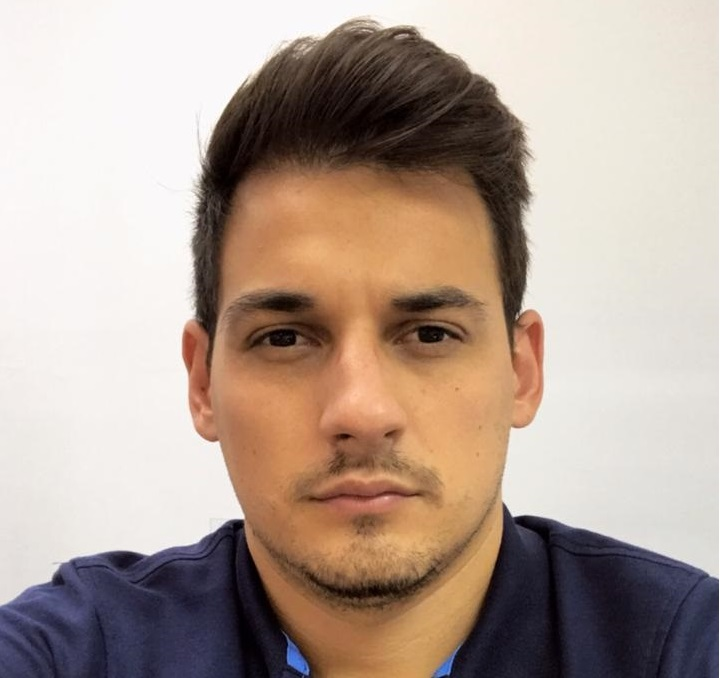

Rua Jasmim, 750, CAMPINAS/SP - CEP:13087-460
Email: matheusdovald@hotmail.com
Celular: (19) 98337-7401 / Telefone: (19) 3633-4448
Atuar na área de engenharia
Meu nome é Matheus , tenho 26 anos, nasci no dia 23 de Fevereiro de 1994, na cidade de São João da Boa Vista no interior de São Paulo e morei nos últimos 6 anos em Limeira onde estou cursando Engenharia de Telecomunicações na UNICAMP. Sou uma pessoa que gosta de conhecer novos lugares, pessoas, busco sempre o aprendizado em cursos, livros e sou uma pessoa com capacidade de liderança e muito proativa, por esse motivo estou sempre buscando evoluir mais para ser um ótimo profissional.
Inglês indermediário
Espanhol intermediário
Pacote Office: Excel, Word e Power Point
No período da faculdade participei de um projeto de banda larga móvel, avaliando indicadores como a Taxa de downstream, Taxa de upstream e Latência para as operadoras Vivo, Claro, Tim e Oi na cidade de Limeira . Este projeto serviu para analisar qual operadora era melhor em cada região da cidade.
Apresentei a primera parte do TCC com conceitos de Holografia Digital e a segunda parte foquei em análise de interferômetro de Lloyd utilizando espelho piezoelétrico para para caracterização de materiais fotossensíveis. Participei e ajudei uma organização voluntária na ONG Amor de Bicho. Quero conhecer!
Participações em feiras pela universidade.Saiba mais...
No período da faculdade realizei estágio na empresa IBEC (Instituo Brasileiro de Ensaios e Conformidade), avaliando equipamentos com seguimentos para certificação.